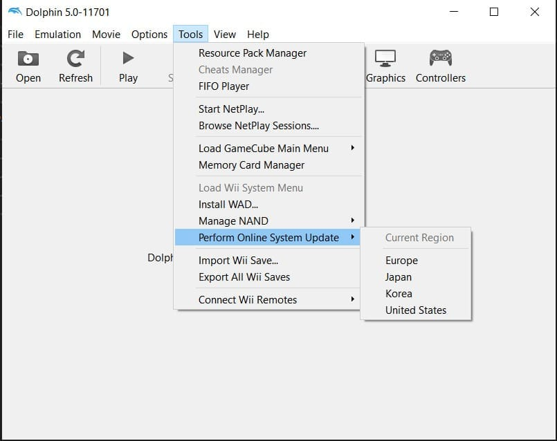

RiiConnect24 for Dolphin

Ten poradnik pomoże Ci zainstalować RiiConnect24 na Twoim Dolphin’ie.
Jeżeli potrzebujesz pomocy z czymkolwiek dotyczącym tego poradnika, napisz bezpośrednio do KcrPL#4625 (po Polsku) lub dołącz do serwera RiiConnect24 na Discordzie (wsparcie dostępne po Polsku!) lub napisz do nas na [email protected].
This guide is for Dolphin Emulator only.
- Follow this tutorial if you’d like to install RiiConnect24 on a Wii.
- Podążaj za tym poradnikiem jeżeli chcesz zainstalować RiiConnect24 na vWii (Tryb Wii na Wii U).
DO NOT INSTALL RIICONNECT24 ON A WII MINI! It will not work and it will brick the system.
Czego będziesz potrzebował
- A computer with either Windows 10 or newer or any Unix-based system
- Dolphin
- RiiConnect24 Patcher
Instrukcje
Sekcja I - Instalacja Dolphin
If you have Dolphin already installed, skip to Section II
- Download the latest Dolphin beta version, but not a stable version as these are very outdated!
- Extract the .7z file using a program like 7-Zip or WinRAR.
- Start Dolphin.
- In Dolphin, go to
Tools->Perform Online System Update-> Choose your region. 
If you have a homebrewed Wii console, you can use a BootMii NAND dump instead of installing the system files with the System Update option. See this page for more information.
Section II - Installing RiiConnect24
If you use a Windows version before Windows 10, you unfortunately cannot use WiiConnect24 inside Dolphin. You can use this program to run it instead.
- Kliknij na link powyżej, aby przejść do strony GitHub gdzie znajduje się patcher.
- Pobierz
RiiConnect24Patcher.bat, jeśli korzystasz z systemu Windows, iRiiConnect24Patcher.shjeśli korzystasz z systemu Unix - Uruchom na Windows’ie
RiiConnect24Patcher.bat. Na systemach Unix, otwórz Terminal, i napiszbash< potem przeciągnijRiiConnect24Patcher.shdo terminalu i kliknij enter. Powinno to wyglądać tak:bash RiiConnect24Patcher.sh. - Naciśnij 1 aby wybrać “
Start” oraz potwierdź swój wybór naciskającENTER. (NOTKA: Te zrzuty ekranu są z Patchera na Windows.) - For this guide, choose “
Install RiiConnect24 on your Dolphin Emulator”
- Wybierz “
Ustawienia ekspresowe (Zalecane)”. Patcher Ci da wszystko co potrzebujesz.
- Wybierz swój region.

- Skoro już tu jesteś, Patcher RiiConnect24 może dodatkowo zainstalować inne opcjonalne kanały które nie używają RiiConnect24.
[X]reprezentuje opcje które są zaznaczone. Po prostu kliknij 5 iENTER, jeśli nie jesteś zainteresowany. 
- Po zakończeniu, będziemy wdzięczni jeśli wyślesz nam anonimową opinie. Jeśli nie chcesz, wyjdź z patchera. Wszystkie pliki powinny być na karcie pamięci.


- In Dolphin, go to
Toolsand thenInstall WAD. Install all the WAD files one by one. - Unzip AnyGlobe Changer v1.0 and run the boot.dol file. Select your region and save. This will allow the Everybody Votes Channel to work.
Unfortunately, Wii Mail doesn’t work in Dolphin yet.
You will have to launch the Everybody Votes Channel 4 times at most in order for it to start working.